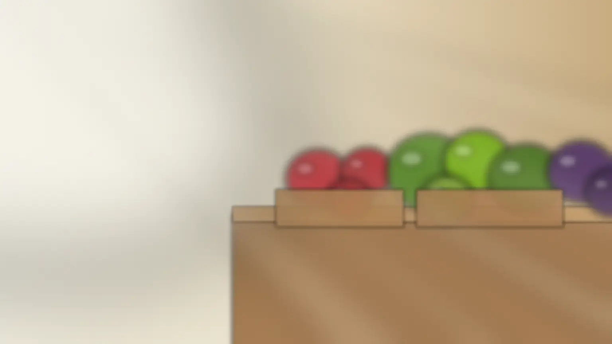
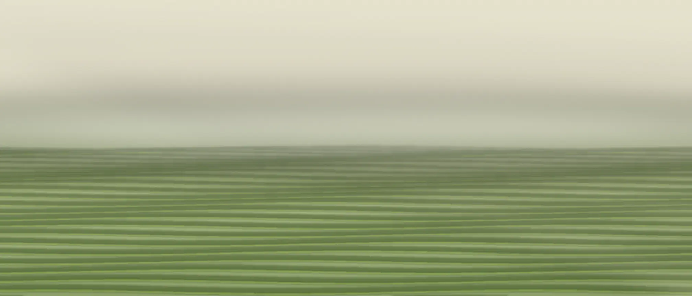
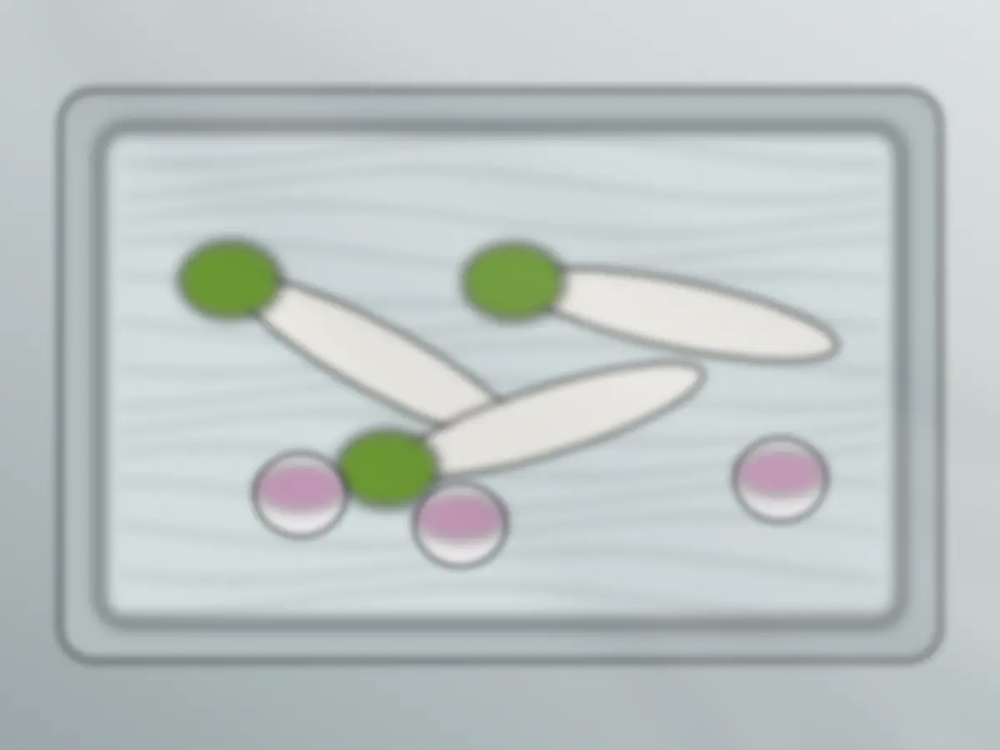
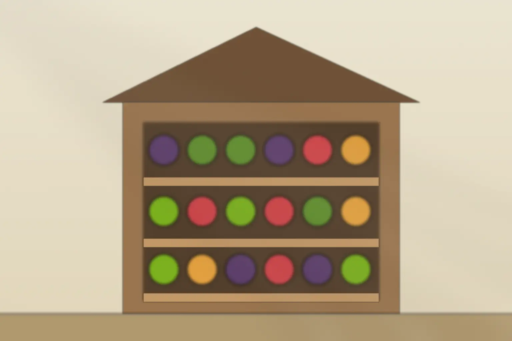
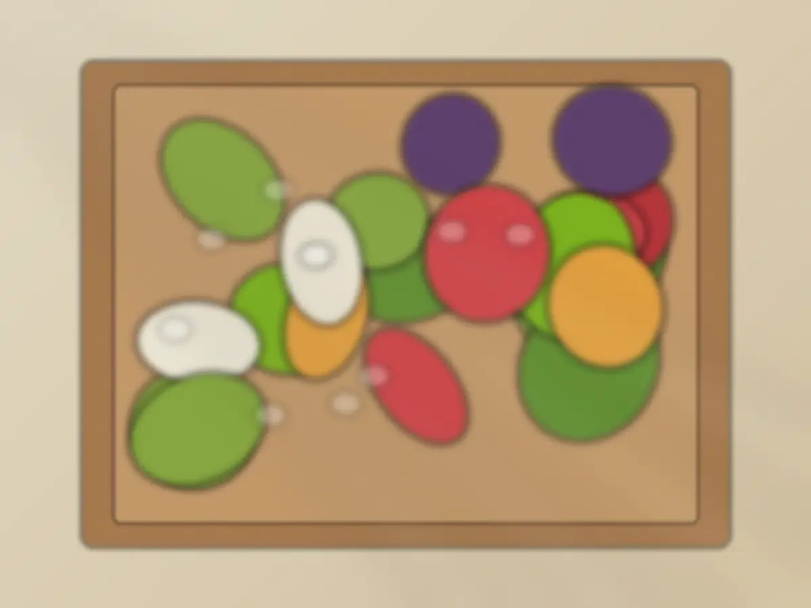

畑でとる
その日に並べる分を、朝のうちにとります。
（日）に書いた、今週の黒板
直売所は 水〜日 8:30 から

書き換え
値段はすべて税込
野菜箱は、この週の野菜から詰めます。箱の大きさを見る

この農園の考え方
こう考えています。前の日にとった野菜を、冷蔵庫で待たせることはしません。朝とった分が売り切れたら、その日はおしまいです。
ほかの売り場との違い
市場を通さず、畑から直売所まで自分たちで運びます。だから、朝とったものを、その日の朝のうちに並べられます。
畑でとる
その日に並べる分を、朝のうちにとります。

井戸水で洗う
根の野菜は、井戸水で土を落とすだけ。葉物は冷たい水にくぐらせてから袋に入れます。洗剤は使いません。

直売所に並べる
棚に並べて、店を開けます。
来て選ぶか、箱で受け取るか、店に届けるか。
値段はすべて税込です。
| 直売所で買う |  予約の野菜箱 |
納品の控え（例）11/4 WED AM大根10かぶ5ほうれん草8飲食店向け | |
|---|---|---|---|
| 値段 | 1袋 150円〜。いも類と玉ねぎは量り売り | 小箱 1,800円 大箱 2,800円 | 品目と量で見積もり（無料） |
| 量の目安 | 1袋から、要る分だけ | 小箱 6〜7品・2人分 大箱 9〜10品・4人分 | 店の使い方に合わせて相談 |
| 予約 | いりません | 金曜まで | 相談して決めます |
| 受け取り | 直売所の棚から | 土曜に直売所で。車で15分圏内は配達（＋300円） | 水・土の朝に配達 |
| 売り切れのとき | その日は閉店します | その週にとれたものから詰めるので、中身は週ごとに変わります | とれ具合を見ながら、品目と量を決めます |
野菜箱は、直売所で同じものを買う合計より1割ほど安くなるように組みます。野菜箱で追加の費用がかかるのは、配達を頼むときだけです。飲食店向けの配達料は【要確認】。
野菜箱の大きさと予約へ